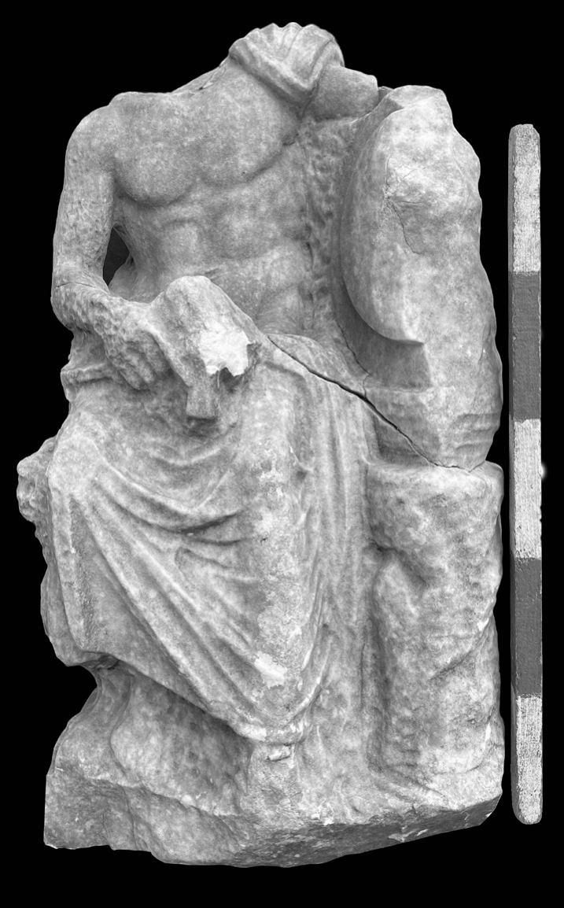
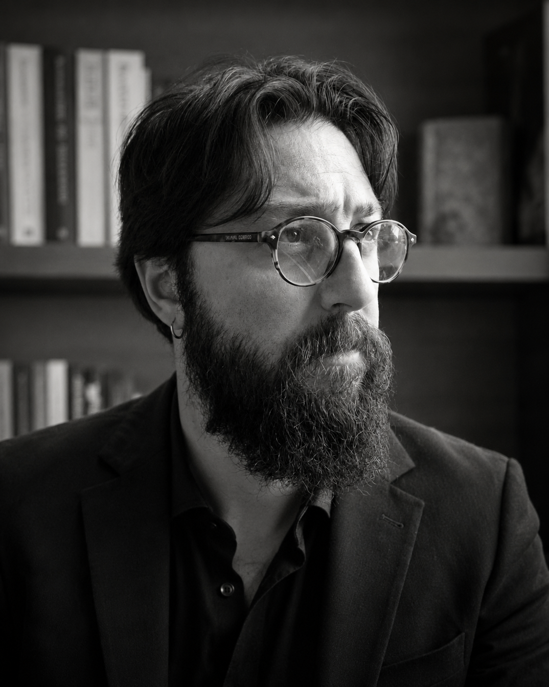
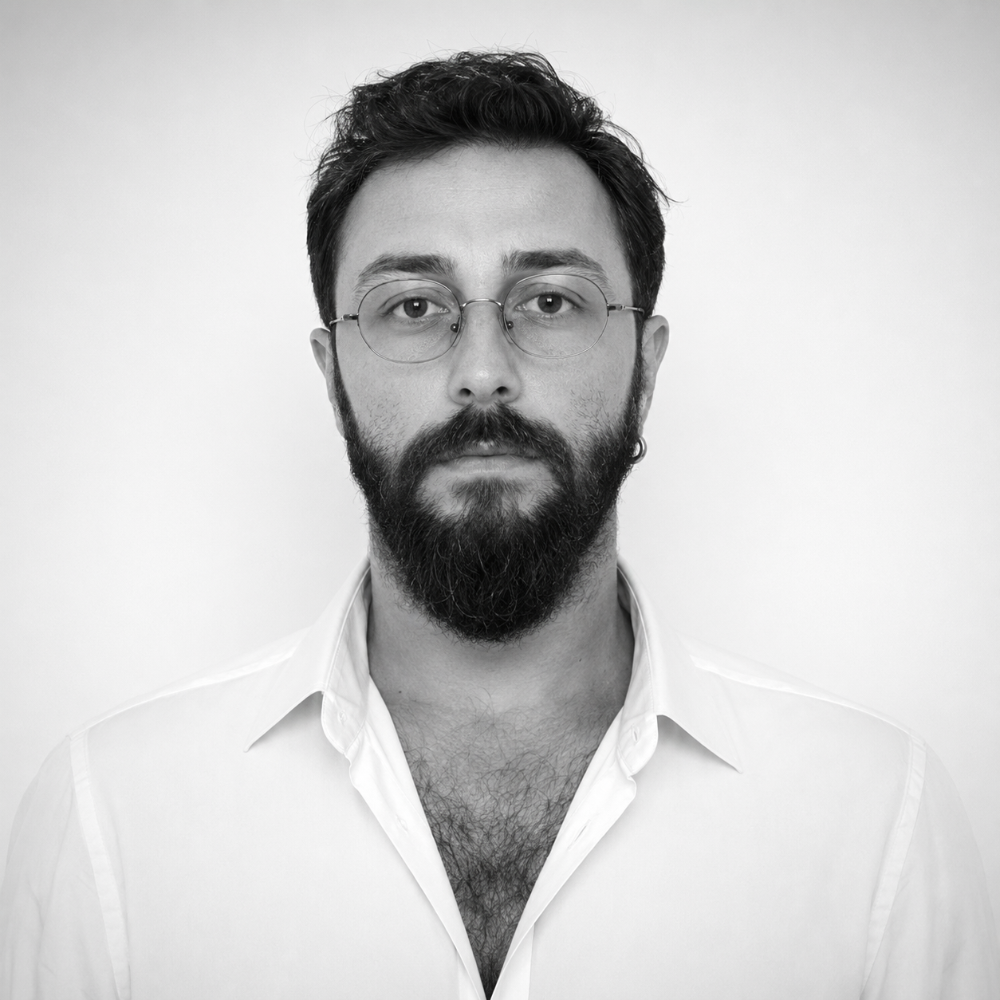
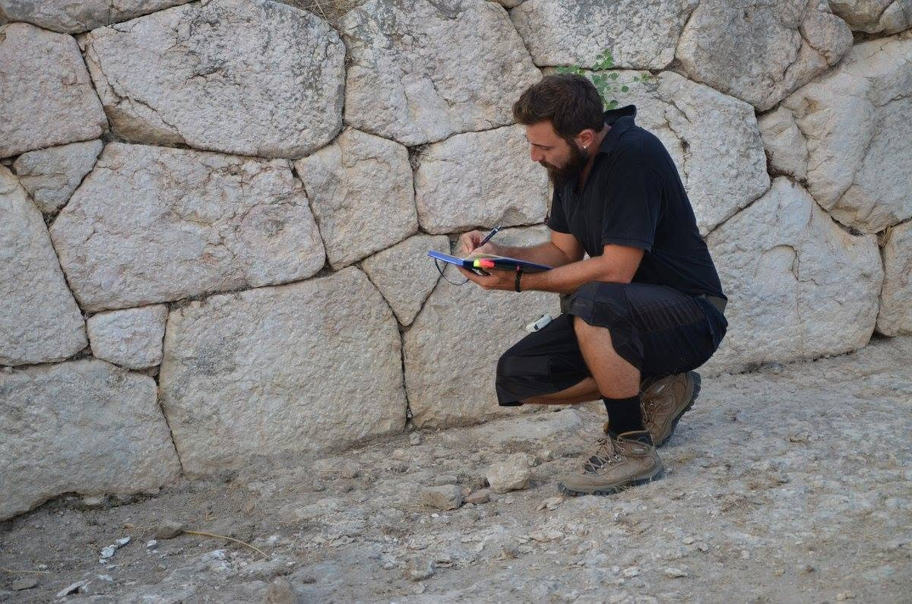
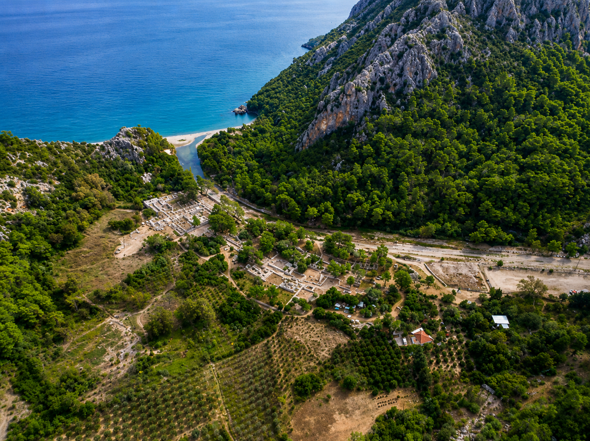
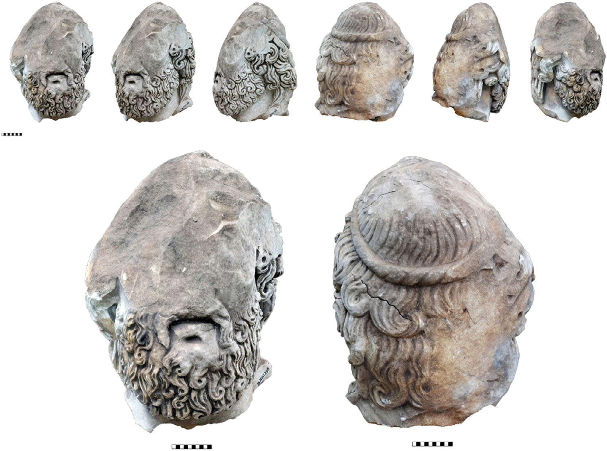
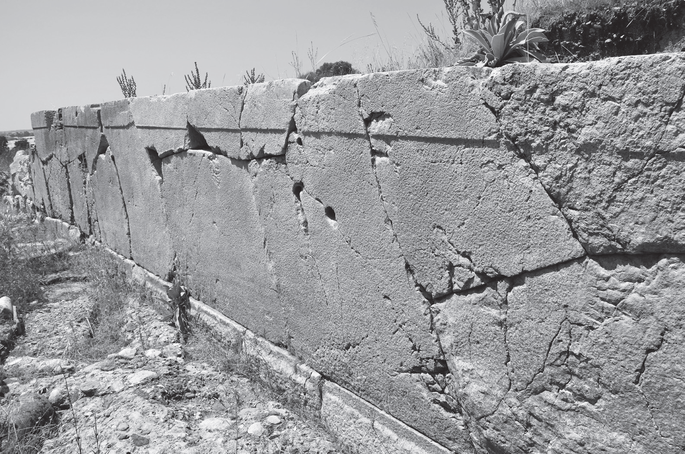

Ancient Sculpture · Olympos
Hephaistos and the religious landscape of Olympos
A study of a seated male cult image identified through sculptural fragments, iconography and the wider religious setting of the city.
Assistant Professor of Archaeology
Exploring the human past through archaeology.

Halil Mert Erdoğan is an Assistant Professor of Archaeology and Deputy Director of the Olympos Excavations. For the past nine years, he has taught archaeology and architectural documentation at university level while actively participating in archaeological fieldwork across Türkiye.
His field experience includes four excavation seasons at Rhodiapolis, three years with the Beydağları Survey Project, eight years as a member of the scientific committee of the Xanthos Excavations, and ongoing survey research at Prokonnesos. He currently continues his work as Deputy Director of the Olympos Excavations, where his research focuses on ancient architecture, sculpture, religious practices and the interpretation of archaeological evidence.
His academic interests centre on the archaeology of Lycia and Anatolia, with particular emphasis on architectural documentation, material culture, archaeological interpretation and cultural heritage. His research combines long-term fieldwork with architectural analysis, digital documentation and scholarly publication.


Fieldwork
Close observation, architectural recording and interpretation begin at the monument itself. Fieldwork remains central to the way archaeological questions are formed and tested.

Landscape, settlement and the archaeology of place.
Research

Ancient Sculpture · Olympos
A study of a seated male cult image identified through sculptural fragments, iconography and the wider religious setting of the city.

Cult Image · Architectural Context
Fragment-based reconstruction brings together sculpture, temple architecture and archaeological context to reconsider the monumental cult image of Olympos.

Ancient Architecture
Construction techniques, wall fabrics and architectural relationships preserve evidence for chronology, planning and changing use.


Publications
Oxford Journal of Archaeology
OLBA
Adalya
Sunday Readings

Sunday Reading · SR-001
A reading on cosmological, mythological and ritual symbolism in one of the oldest board games of ancient Egypt.
Read article →Contact